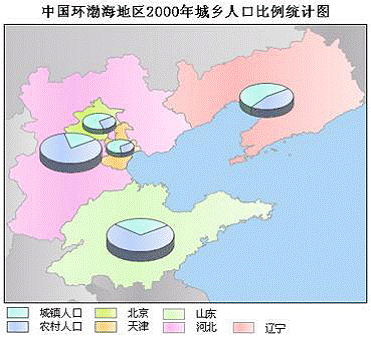

com.supermap.android.theme.Theme
com.supermap.android.theme.ThemeGraph
com.supermap.android.theme.Theme
com.supermap.android.theme.ThemeGraph
|
|||||||||
| 上一个类 下一个类 | 无框架 | ||||||||
| 摘要： 嵌套 | 字段 | 构造方法 | 方法 | 详细信息： 字段 | 构造方法 | 方法 | ||||||||
java.lang.Object
public class ThemeGraph
统计专题图。
统计专题图通过为每个要素或记录绘制统计图来反映其对应的专题值的大小。统计专题图可以基于多个变量，反映多种属性，即可以将多个专题变量的值绘制在一个统计图上。通过统计专题图可以在区域本身与各区域之间形成横向和纵向的对比。多用于具有相关数量特征的地图上，比如表示不同地区多年的粮食产量、GDP、人口等，不同时段客运量、地铁流量等。
下图为一幅渤海地区2000年城乡人口比例的统计专题图：

| 字段摘要 | |
|---|---|
double |
barWidth柱状专题图中每一个柱的宽度。 |
ThemeFlow |
flow通过该字段可以设置统计符号是否流动显示和牵引线风格。 |
GraduatedMode |
graduatedMode统计图中地理要素的值与图表尺寸间的映射关系（常数、对数、平方根），即分级方式。 |
ThemeGraphAxes |
graphAxes用于设置统计图中坐标轴样式相关信息，如坐标轴颜色、是否显示、坐标文本样式等。 |
ThemeGraphSize |
graphSize用于设置统计符号的最大最小尺寸。 |
java.lang.Boolean |
graphSizeFixed缩放地图时统计图符号是否固定大小。 |
ThemeGraphText |
graphText用于设置统计图上的文字是否可见、文本类型、文本显示风格。 |
ThemeGraphType |
graphType统计专题图渲染类型。 |
ThemeGraphItem[] |
items统计专题图子项（ThemeGraphItem）集合。 |
int[] |
memoryKeys指定需要制作专题图的对象ID数组，如SMID号 |
java.lang.Boolean |
negativeDisplayed专题图是否显示属性为负值的数据。 |
ThemeOffset |
offset用于设置统计图的偏移量。 |
java.lang.Boolean |
overlapAvoided统计图是否采用避让方式显示。 |
double |
roseAngle统计图中玫瑰图或三维玫瑰图用于等分的角度，默认为0度，精确到0.1度。 |
double |
startAngle饼状统计图扇形的起始角。 |
| 从类 com.supermap.android.theme.Theme 继承的字段 |
|---|
themeMemoryData, type |
| 构造方法摘要 | |
|---|---|
ThemeGraph()构造函数。 |
|
| 方法摘要 |
|---|
| 从类 java.lang.Object 继承的方法 |
|---|
clone, equals, finalize, getClass, hashCode, notify, notifyAll, toString, wait, wait, wait |
| 字段详细信息 |
|---|
public double barWidth
柱状专题图中每一个柱的宽度。使用地图坐标单位，默认值为0。
public ThemeFlow flow
通过该字段可以设置统计符号是否流动显示和牵引线风格。
public GraduatedMode graduatedMode
统计图中地理要素的值与图表尺寸间的映射关系（常数、对数、平方根），即分级方式。默认值为GraduatedMode.CONSTANT
public ThemeGraphAxes graphAxes
用于设置统计图中坐标轴样式相关信息，如坐标轴颜色、是否显示、坐标文本样式等。
public ThemeGraphSize graphSize
用于设置统计符号的最大最小尺寸。
public java.lang.Boolean graphSizeFixed
缩放地图时统计图符号是否固定大小。默认值为false，即统计图符号将随地图缩放。
public ThemeGraphText graphText
用于设置统计图上的文字是否可见、文本类型、文本显示风格。
public ThemeGraphType graphType
统计专题图渲染类型。
public ThemeGraphItem[] items
统计专题图子项（ThemeGraphItem）集合。必设字段。
public int[] memoryKeys
指定需要制作专题图的对象ID数组，如SMID号
public java.lang.Boolean negativeDisplayed
专题图是否显示属性为负值的数据。默认为true表示显示。
public ThemeOffset offset
用于设置统计图的偏移量。
public java.lang.Boolean overlapAvoided
统计图是否采用避让方式显示。
public double roseAngle
统计图中玫瑰图或三维玫瑰图用于等分的角度，默认为0度，精确到0.1度。
public double startAngle
饼状统计图扇形的起始角。默认为0度，精确到0.1度。
| 构造方法详细信息 |
|---|
public ThemeGraph()
构造函数。
|
|||||||||
| 上一个类 下一个类 | 无框架 | ||||||||
| 摘要： 嵌套 | 字段 | 构造方法 | 方法 | 详细信息： 字段 | 构造方法 | 方法 | ||||||||